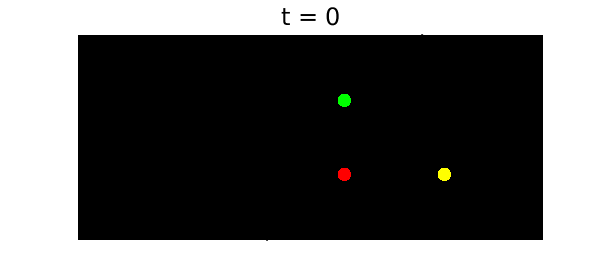
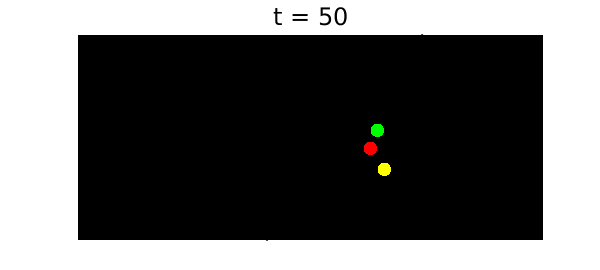
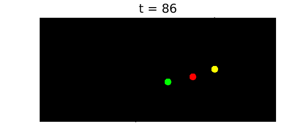

function threePlanets()
When three or more bodies interact gravitationally according to Newton's laws, the resulting orbits can be wonderfully complicated. This example explores a special case in which the initial configuration has the three planets stationary at the positions of a 3-4-5 right triangle and the planets attract each other with pairwise $1/r^2$ forces.
To solve the problem, we use Chebfun's backslash command in the standard manner (which invokes the MATLAB ode113 command to do the time-stepping). Complex arithmetic is used for brevity. We solve the problem over a time interval of length 100, and the solution reveals a beautiful property: the orbit is chaotic for $t < t_c \approx 86$, but then at time $t = t_c$ the system "self-ionizes". After this point one planet goes off in one direction and the other two go off as a pair in the opposite direction. Such a thing could never happen with just two planets, but with three it is possible: energy and momentum are conserved. Thus this dynamical system illustrates the phenomenon of transient chaos.
This Example is modeled after the code planets.m in [1]. The second author first heard of the example from Oxford's astrophysicist James Binney.
To have some fun with this problem, it's nice to plot the configurations on a black background with a collection of "stars" at random locations. The code plotframe does this. Here is our initial condition:
x0 = 0; y0 = 3; z0 = 4i;
MS = 'markersize'; FS = 'fontsize';
plotframe(x0,y0,z0)
title('t = 0',FS,18)

Now we solve the problem to time $t=100$:
tmax = 100; dom = [0 tmax]; N = chebop(@planetfun, dom); N.lbc = @(x,y,z) [x-x0; y-y0; z-z0; diff(x); diff(y); diff(z)]; u = N\0; [x,y,z] = deal(u);
Here is a typical configuration for $t < t_c$:
t = 50; plotframe(x(t),y(t),z(t)) title(['t = ' num2str(t) ],FS,18)

Here is how it looks at the critical moment:
t = 86; plotframe(x(t),y(t),z(t)) title(['t = ' num2str(t) ],FS,18)

Of course, this problem really looks best in the form of movie! To see the movie, you can execute this M-file. The final frame shows the system after it has split into two subsyestems, drifting apart forever.
dt = .4; tmax = 100;
for t = 0:dt:tmax
plotframe(x(t),y(t),z(t))
title(sprintf('t = %3.0f',t),FS,18),
drawnow, pause(0.1)
end
References
- L.N. Trefethen, Ten digit algorithms, unpublished essay, https://people.maths.ox.ac.uk/trefethen/tda.html, 2005.
function plotframe(x,y,z)
rng(0);
MS = 'markersize';
% Set the mood by plotting some "stars":
fill(20*[-1 1 1 -1 -1],20*[-1 -1 1 1 -1],'k')
hold on, grid on, axis([1.27*[-6.3 4.7] -3.5 7.5])
xStars = 15*rand(250,1)-8; yStars = 11*rand(250,1)-3.5;
plot(xStars,yStars,'.w',MS,4);
% Locate the three planets.
xh = plot(real(x),imag(x),'.r',MS,35);
yh = plot(real(y),imag(y),'.y',MS,35);
zh = plot(real(z),imag(z),'.g',MS,35);
axis off, hold off
end
function out = planetfun(t, x, y, z)
forceYX = (y - x)./abs(y - x).^3;
forceZX = (z - x)./abs(z - x).^3;
forceZY = (z - y)./abs(z - y).^3;
out = [diff(x, 2) - forceYX - forceZX;
diff(y, 2) + forceYX - forceZY;
diff(z, 2) + forceZX + forceZY];
end
end